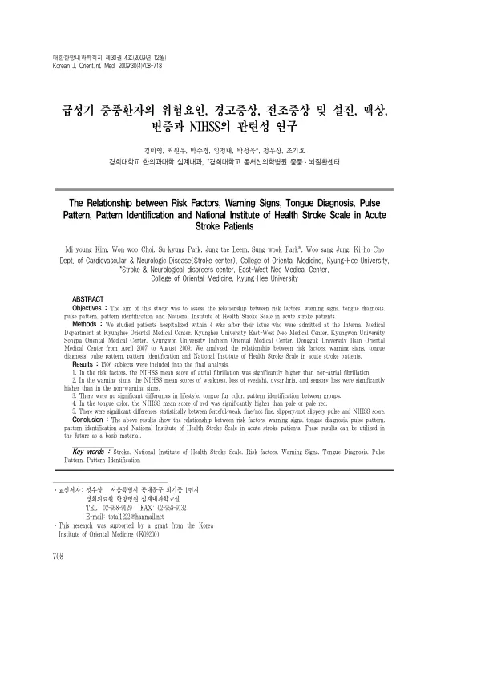

급성기 중풍환자의 위험요인, 경고증상, 전조증상 및 설진, 맥상, 변증과 NIHSS의 관련성 연구
Kim My, Choi Ww, Park Sk, Leem Jt, Park Sw, Jung Ws, Cho Kh
The Journal of Internal Korean Medicine 30(4):708-718

첫 장 · 오픈액세스First page · open access
논문 소개Summary
급성기 중풍 환자의 위험인자와 경고증상, 설진, 맥진, 변증이 신경학적 중증도와 어떤 관계인지 살핀 다기관 연구입니다. 2007년 4월부터 2009년 8월까지 다섯 개 한방병원에 입원한 1,506명이 분석에 들어갔고 중증도는 미국립보건원 뇌졸중 척도로 쟀습니다. 위험인자 가운데는 심방세동이 있는 쪽의 평균 점수가 유의하게 높았습니다. 경고증상에서는 위약감과 시력 소실, 구음장애, 감각 소실이 있던 환자의 점수가 높았습니다. 설색에서는 붉은 혀가 창백하거나 담홍한 혀보다 점수가 높았고, 맥의 유력·무력과 세·비세, 활·비활에서도 차이가 있었습니다. 반면 생활습관과 설태색, 변증은 군 사이에 유의한 차이가 없었습니다.
A multicentre study of how risk factors, warning signs, tongue diagnosis, pulse pattern and pattern identification relate to neurological severity in acute stroke. Of patients admitted within four weeks of onset to five Korean medicine hospitals between April 2007 and August 2009, 1,506 entered the analysis, with severity measured by the National Institutes of Health Stroke Scale. Among risk factors, mean scores were significantly higher in those with atrial fibrillation. Among warning signs, scores were higher in patients who had experienced weakness, loss of eyesight, dysarthria or sensory loss. For tongue colour, red tongues scored higher than pale or pale red ones, and differences also appeared between forceful and weak, fine and not fine, slippery and not slippery pulses. Lifestyle, tongue fur colour and pattern identification, by contrast, showed no significant differences between groups.
인용Cite
Kim My, Choi Ww, Park Sk, Leem Jt, Park Sw, Jung Ws, Cho Kh. 급성기 중풍환자의 위험요인, 경고증상, 전조증상 및 설진, 맥상, 변증과 NIHSS의 관련성 연구. The Journal of Internal Korean Medicine. 2009;30(4):708-718.